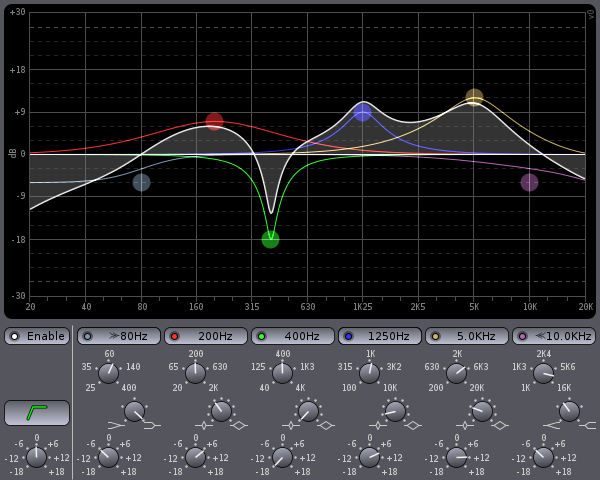

There's a new, up and coming graphical EQ on the block
Robin Gareus has just tagged v0.2 of his new, up and coming, graphical EQ on github. Fil4.lv2 is based on DSP from Fons Adriaensen's highly regarded fil-plugin, which you may have seen in your plugin manager as '4-band parametric filter'.
Please note, at current this is still very much a work in progress.

Fil4.lv2 is available as an LV2 plugin but there is also a standalone JACK app.
So what makes it different from Fons' fil-plugin? In addition to adding a graphical EQ display, it also includes new features, such as high/low-shelf filters, making it an even more flexible EQ. All EQ parameters can be manipulated directly from the graph and it's window can also be resized, allowing you to see the graph in more detail. It also includes a DC-offset filter.
For those interested in trying it out, you can visit Fil4.lv2's github page, where there are build instructions.
Just remember that it is still in it's early days of development and is currently only intended for those interested in bug reporting and testing.